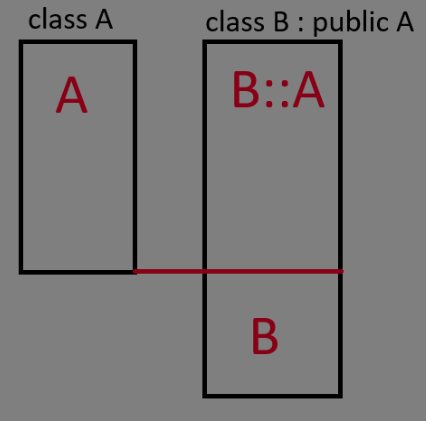

Objektumorientált idióma
Senkit sem szeretnék a sablonszöveggel untatni, ha szép és kerek leírást keresünk arra itt a wikipédia.
A lényeg
Az objektumorientált programozás alapja, hogy minden dolog ami a programunkban létezik egy objektum.
Encapsulation (Egységbe zárás)
Az objektumok valamilyen blueprintek(C++ban classok) példányai. Az osztályok valamilyen állapotot és az azokon elvégezhető műveleteket írják le(tagváltozó ~ állapot, tagfüggvény ~ művelet).
Inheritance (öröklődés)
Van olyan eset, amikor egy adott dolog egyben egy másik dolog, csak kicsit kiegészítve, megváltoztatva. Pl. a Hallgató egy egyetemi polgár, viszont képes vizsgát felvenni és van kreditindexe.
Ekkor az egyetemi polgár a "base class" a hallgató pedig a "subclass" nevet kapja.
Polymorphism
Kéz a kézben jár a leszármaztatással. A fő lényege, hogy egy base class -ra mutató dolog kaphat subclass objektumot, és ezen a mutatón keresztül való viselkedés a subclass viselkedését mutatja.
Abstraction
A legtöbb esetben nem érdekel minket, hogy egy adott függvény vagy típus pontosan hogy működik, csak az, hogy mit csinál. Pl. az std::string push_back() tagfüggvénye beilleszt egy karaktert a sztring végére, de az hogy ezt hogy tesz az az átlag programozó számára(a típus felhasználója) nem érdekes.
Ezt az elvet a jegyzet is alkalmazni fogja, nem lesznek definiálva tagfüggvények, ha azok implementációja jelentéktelen.
Inheritance
A leszármazás szintaktikája viszonylag egyszerű:
class polgar{
public:
std::string name;
std::string neptun;
std::string get_decorated_name() const {
return name + std::string(" ") + neptun;
}
};
class hallgato : public polgar {
public:
double calculate_kreditindex();
std::vector<Targy> targyak;
};
Egy adott leszármazott példány memóriaképét ekkor valahogy így kell elképzelni:

Egyszerre több osztályból is le lehet származni, valamint leszármazottból is lehet tovább származtatni:
class A {};
class B {};
class C : public A, public B {}
class D : public A {};
class E : public D {};
Polimorfizmus
Ha hallgato a polgar leszármazottja, akkor polgar -ra mutató pointerek már képesek hallgato -ra mutatni, valamit polgar referencia tud hallgato objektumot alias-olni.
FONTOS! Az inverz nem igaz.
hallgato* h = new polgar;
hiszen itt a h egy olyan objektumra mutat amiben nincs meg a teljes hallgato rész.
FONTOS!
polgar típusú változóban hallgato objektumot tárolni és fordítva hiba! polgar típusú változóba halgato típusú objektumot rakva az objektum hallgató része levágódik és csak a polgar része marad meg. Ezt object slicing-nak hívjuk.
Protected tagok
A private tagok nem láthatók a leszármazottakból sem. A protected tagok a leszármazottból látszanak, az osztályon kívülről viszont nem.
Inheritance access specifiers
Mint ahogyan tagokból, leszármazásból is létezik publikus, protected és private.
class Base {};
class A : public Base {};
class B : protected Base {};
class C : private Base {};
Ezt a következőképp kell érteni:
- public: a subclass és a külső kód is tud a leszármazásról, a leszármazotton keresztül a subclass és a külső kód is eléri a base class
publictagjait, aprivateésprotectedtagokat viszont nem - protected: csak a subclass tud a leszármazásról, a leszármazotton keresztül csak a subclass éri el a base class
publictagjait, a külső kód viszont egyáltalán nem éri el a base class tagjait - private: a subclass sem tud a leszármazásról, a leszármazotton keresztül nem érhetőek el a base class tagjai.
A struct-al definiált osztályoknál a leszármazásnál is public a default, míg a class-al definiáltaknál private.
Gyakori kérdés: hogyan alakul a publikus, protected és privát tagok láthatósága publikus, protected és privát öröklés esetén? ... megoldását az olvasóra bízom
Virtuális tagfüggvények
Tegyük fel, hogy a hallgatók dekorált nevéhez hozzá szeretnénk adni, hogy "hallgató". Ehhez valahogyan "felül kell írnunk" a base class get_decorated_name függvényét. Azokat a függvényeket amelyeket felül lehet írni virtuális tagfüggvényeknek hívunk és a virtual keyworddel jelezzük őket.
A base class-ra mutató pointeren keresztül tárolt subbclassnak a saját tagfüggvény verziója hívódik majd.
Az ovverride keyword opcionálisan a felülíró függvény fejléce után kerül, hasznos kiírni.
https://godbolt.org/z/j7a3jW9fP
#include <string>
#include <iostream>
#include <vector>
struct Targy {};
class polgar{
public:
std::string name;
std::string neptun;
virtual std::string get_decorated_name() const {
return name + std::string(" ") + neptun;
}
};
class hallgato : public polgar {
public:
double calculate_kreditindex();
std::vector<Targy> targyak;
virtual std::string get_decorated_name() const override {
return std::string("hallgato ") + name + std::string(" ") + neptun;
}
};
int main(){
polgar* p = new hallgato;
p->name = "Gipsz Jakab";
p->neptun = "ABC123";
std::string name = p->get_decorated_name(); //hallgato tagfüggvényét hívja
std::cout << name; //hallgato Gipsz Jakab ABC123
}
Vtable
A virtuális függvényhívások egy speciális, vtable -nek nevezett adatstruktúrán keresztül történik. Amikor virtuális függvényt adunk egy osztályhoz, akkor az osztály kap egy rejtett tömböt, amely függvénypointereket("függvényeket") tárol. Ez a tömb tárolja az adott osztály implementációját a virtuális függvényekre.
Miért szükséges ez?
Mivel base class pointer mutathat subclass objektumra, így fordításidőben nem tudhatjuk, hogy melyik függvényt kell hívni, ezért futásidőben ezt a tömböt használjuk, hogy a helyes függvényt hívjuk.
Mekkora overheaddel jár ez?
A válasz: depends. Gyakorlatilag semekkorával, persze ez sok tényezőtől függ. Gyenge hardveren(pl. mikrokontrollerek) problémát jelenthet, azonban egy asztali számítógépen valószínűleg nem ez lesz a szűk keresztmetszet.
Pure virtual function, absztrakt osztályok
Néha szeretnénk azt, hogy a base class ne legyen valóban példányosítható, hanem valamilyen függvényét implementálja minden subclass. Az ilyen függvényeket pure virtual functionnak, az osztály t pedig absztrakt osztálynak nevezzük. Pure virtual function-t az =0 postfix-el deklarálhatunk.
struct base {
virtual void foo() = 0;
};
struct derived : base {
virtual void foo() override {
std::cout << "pog\n";
}
}
int main(){
base b; //error, cannot instantiate abstract class
derived d; //ok
base* p = new derived; //ok, base* mutat derived objektumra
base* p2 = new base; //error, cannot instantiate abstract class
}
Vegyük észre: az =0 szintaxis onnan jön, hogy a vtable-ben a függvény helyén egy 0 érték, "null pointer" lesz.
Base class konstruktor és virtuális destruktor
Amikor egy leszármazott objektumot készítünk, akkor inicializálni kell annak base class "részét" is. Ehhez meg kell hívni a base class konstruktorát (ha nincs neki default konstruktora). Ezt a már jól ismert member initializer list-ről tehetjük meg.
https://godbolt.org/z/cndqTPEMj
#include <string>
#include <iostream>
#include <vector>
struct Targy {};
class polgar{
protected:
std::string name;
std::string neptun;
public:
virtual std::string get_decorated_name() const {
return name + std::string(" ") + neptun;
}
polgar(const std::string& name, const std::string& neptun) : name(name), neptun(neptun) {}
};
class hallgato : public polgar {
std::vector<Targy> targyak;
public:
hallgato(const std::string& name, const std::string& neptun) : polgar(name, neptun) //a polgar konstruktorát hívjuk a name és neptun paraméterekkel
{}
double calculate_kreditindex();
virtual std::string get_decorated_name() const override {
return std::string("hallgato ") + name + std::string(" ") + neptun;
}
};
int main(){
polgar* p = new hallgato("Gipsz Jakab", "ABC123");
std::string name = p->get_decorated_name(); //hallgato tagfüggvényét hívja
std::cout << name; //hallgato Gipsz Jakab ABC123
}
polgar* p = new hallgato("Gipsz Jakab", "ABC123");
Azonban van egy kis baj...
A probléma a destruktor kérdése. Ha a base classra mutató pointerre hívunk delete -t, akkor az a base class destruktorát fogja meghívni. Ez probléma, ha a subclass destruktora valamilyen erőforrást szabadít fel, viszont nem hívódik meg.
Erre a problémára nyújtanak megoldást a virtuális destruktorok. Amikor egy base-re mutató pointerre delete-t hívunk, akkor a láncon felfelé(legalsó leszármazott->legfelső leszármazott) meghívódik az összes destruktor.
https://godbolt.org/z/GfT89Edne
struct base {
base() = default; //explicit default: "im okay with what the compiler gives me" (C++11 -től)
virtual ~base() {
std::cout << "base dtor\n";
}
};
struct derived : base {
derived() = default;
virtual ~derived() {
std::cout << "derived dtor\n";
}
};
int main(){
base* p = new derived;
delete p;
}
Output:
derived dtor
base dtor
'final' keyword
A final keyword azt jelzi, hogy egy osztályból már nem lehet leszármazni.
struct something final {};
struct something_else : something {}; //error, 'something' is final
Virtual inheritance
A gyémánt probléma az OOP egyik legnagyobb kérdése.
struct A {
int x;
};
struct B : A {};
struct C : A {};
struct D : B, C {};
Ekkor a leszármazási gráf egy "gyémánt" alakot alkot, amely a következő problémát veti fel:
Amikor a D -n keresztül A beli tagokat érünk el, akkor azt a D osztály B vagy C részén tesszük -e meg?
Ez akkora dilemma, hogy sok nyelv (pl. Java) szimplán nem enged egyszerre több osztályból való származást.
C++ -ban ezt a problémát a virtuális leszármazással oldották meg.
Minden virtuálisan örökölt osztályból garantáltan csak egyet tartalmaz majd minden leszármazott, akkor is, ha az osztály többször is szerepel a hierarchiában.
A virtuális ősosztályok minden nem-virtuális ősosztály előtt jönnek létre és a virtuális base classok konstruktorát csak a hierarchiában legalsó osztály konstruktora fogja meghívni.
B konstruktora hívódik meg először, mivel virtual base class. Ez az AA initializer listjének sorrendjétől független, sőt, warningot is kapunk, ha B nem legelől van.
Ezután következik X és Y konstruktora, hiszen az A konstruktor törzse csak az initializer list után, az objektum inicializálása után fog lefutni.
A destruktor hívások a konstruktor hívásokkal ellentétes sorrendben történnek.
https://godbolt.org/z/s6PqqjP1a
#include <iostream>
struct B
{
int n;
B(int x) : n(x) {
std::cout << "b ctor\n";
}
};
struct X : virtual B {
X() : B(1) {
std::cout << "x ctor\n";
}
};
struct Y : virtual B {
Y() : B(2) {
std::cout << "y ctor\n";
}
};
struct AA : X, Y {
AA() : B(3), X(), Y() {
std::cout << "a ctor\n";
}
};
int main(){
AA x;
}
A kódrészletben a konstruktor hívások sorrendje:
- B konstruktor
- X konstruktor
- Y konstruktor
- A konstruktor
Saját exception
Korábban már szerepelt, hogy lehetséges saját kivételeket létrehozni. Ehhez semmi mást nem kell csinálni, mint az std::exception, vagy legtöbb esetben inkább az std::runtime_error osztályból leszármazni. A kivételeknek van egy konstruktora amely egy hibaüzenetet vesz át, ezért ezt implementáljuk.
https://godbolt.org/z/a6rTb3cnG
#include <iostream>
#include <stdexcept>
struct image_load_error : std::runtime_error {
image_load_error(const std::string& what) : std::runtime_error(what) {}
};
struct image{
image(const std::string& path){
if(path.empty()){
throw image_load_error("Image Load Error: image cannot have empty path!");
}
}
};
int main(){
try{
image img("");
}catch(const image_load_error& img_error){
std::cout << img_error.what();
}catch(std::exception& e){
std::cout << e.what();
}
}